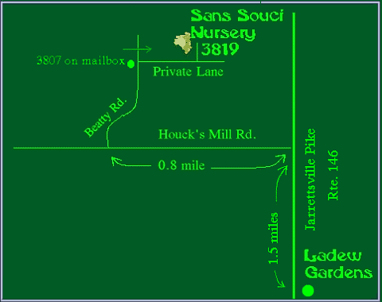

Memorial Day Weekend
Sunday May 30, 2010 and
Monday May 31, 2010;
2:00PM to 6:00PM
Thousands of Bearded and Siberian Irises at Peak Bloom !
Tentatively schedules for Father's Day, June 20, 2010.
However the bloom season is quite advanced this year, 2010, so we are not sure now
(April 19th 2010) when Peak Bloom will be for our Japanese Irises.
Please check back here later or phone 410-557-0250
Thousands of JAPANESE Irises at Peak Bloom!
Normally this is the third weekend in October.
Please check back here later or phone 410-557-0250
Thousands of Fall Reblooming Irises at Peak Bloom!
3819 Beatty Road, Monkton, Maryland, USA 21111
Phone :(410) 557-0250 or 410- 299 1075 for directions
 |
Page updated March 05, 2009
|